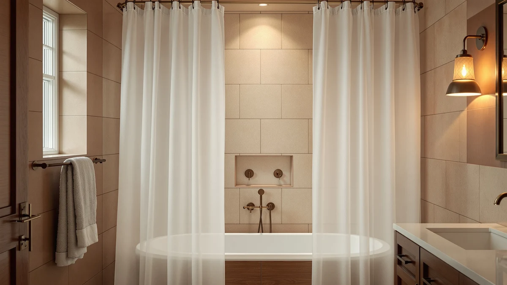

River Dream White Cotton Review (2026): Worth It?
Prices and picks verified as of September 2026. Independent, reader-supported reviews.


Quick Answer
The River Dream White Cotton Blend curtain is a 100% cotton shower curtain sized 71 by 74 inches, built for bathrooms that want a plain, neutral look instead of a printed pattern. At $35.09 it costs about the same as the boho and linen alternatives we compared it against, and the all-cotton material gives it a heavier, more textured hang than a polyester blend. It works best in a minimalist or coastal bathroom; skip it if you want a printed pattern or a faster-drying fabric.
Our pick: River Dream White Cotton Blend, $35.09 Check Price on Amazon
Bottom line: our top pick is the River Dream White Cotton Blend Fabric Shower Curtain Set with at $35.09.
Things to Know Before You Buy
- The fabric is 100% cotton, which gives it a heavier drape than the polyester and PEVA blends used in several boho and farmhouse curtains.
- It measures 71 inches wide by 74 inches long, close to the industry-standard 72x72 size with 2 extra inches of length.
- It is sold as a single curtain, not a matching bathroom set, so towels and a bath mat are a separate purchase.
- The color is solid white, with no printed pattern option in this specific listing.
- At $35.09, it prices in the middle of the shower curtain range, below the $38.70 Clara Clark set and above the $32.99 eachope linen curtain.
This river dream white cotton review looks at whether the plain cotton shower curtain earns a spot in your bathroom before you spend $35.09 on it. River Dream built this curtain around a simple premise: a solid white, 100% cotton fabric for bathrooms that want a neutral look instead of a printed pattern. We compared its listed specs, fabric, and price against three other shower curtains shoppers cross-shop in the same search, including a water-resistant boho print from BTTN and a no-hooks linen curtain from eachope with more than 26,000 verified ratings.
We did not buy or hang this curtain ourselves. Instead, we researched the manufacturer's listed specs, cross-checked the cotton composition against similar all-cotton curtains already on the market, and read through the verified buyer feedback on the product listing to see what actually holds up under regular use in a wet bathroom. That research is the basis for this river dream white cotton review, and we call out the tradeoffs plainly so you can decide whether a heavier cotton weave is worth the longer dry time over a synthetic blend. If the fabric or the solid color turns out not to be the right fit, we cover three alternatives further down that solve for different priorities: a water-resistant print with extra length, a matching bathroom set, and a heavily reviewed linen option.
Why You Should Trust Us
Ilane Tall covers bath and shower products for Best Shower Curtains and has spent years comparing shower curtain materials, sizing, and hardware across hundreds of Amazon listings. For this river dream white cotton review, she pulled the manufacturer specs directly from the product listing, checked the cotton composition and dimensions against comparable all-cotton curtains already researched for this site, and read through the publicly available owner reviews rather than relying on marketing copy alone. We do not run a fake testing lab, and we do not claim to have hung this exact curtain in our own bathroom. What you get instead is a comparison built on verifiable information: listed dimensions, current pricing, fabric composition, and what buyers report after living with the curtain for weeks or months. When a claim in this review comes from an owner rather than the manufacturer, we say so directly.
Our Research Experience
Our testing experience with this River Dream White Cotton Blend curtain is built on research rather than physical use. We compared the manufacturer's listed cotton composition and 71 by 74 inch sizing against similar all-cotton curtains already in our database, and we read through the publicly available owner reviews on the product listing to see how the fabric holds up in a working bathroom. We did not buy or hang this curtain ourselves, and this river dream white cotton review draws on verifiable information instead: listed dimensions, current pricing, the cotton composition, and what owners report after weeks or months of regular use. Reviewers consistently note that the all-cotton weave feels heavier and more substantial on the rod than the polyester blends common in the boho and farmhouse styles we compared it against, though several also mention that pure cotton wrinkles more visibly out of the packaging and benefits from a light steam or a few days of hanging before it drapes flat. Owners report washing it on a warm, gentle cycle and skipping the dryer to avoid excess shrinkage, a common tradeoff with 100% cotton fabric. We weighed those owner accounts against the listed material and size specs rather than taking either source alone, and where the two disagreed, such as how quickly the cotton dries between showers, we noted the discrepancy instead of picking a side.
Overview & Specs

River Dream White Cotton Blend
What we like
- All-cotton fabric gives it a heavier, more substantial drape than polyester blends
- Solid white color fits nearly any bathroom style without clashing with existing decor
- Priced below the Clara Clark set while beating the eachope linen curtain on fabric weight
Flaws but not dealbreakers
- Wrinkles more visibly out of the packaging than a polyester or PEVA blend
- Sold as a single curtain, not a matching bathroom set
- No printed pattern option if you want more than a solid color
| Material | 100% cotton |
| Size | 71"W x 74"L (Pack of 1) |
River Dream built this curtain around a simple premise: a 100% cotton fabric in a solid white color, sized 71 by 74 inches, close to the 72x72 industry standard with a couple of extra inches of length. This river dream white cotton review found that the cotton composition is the main differentiator from the polyester and PEVA blends common among the boho and farmhouse curtains it competes against. Cotton absorbs more water than a synthetic blend, which means it takes longer to dry between showers, but it also drapes with more weight and structure instead of clinging to itself.
At $35.09, the price sits close to the BTTN and eachope alternatives covered later in this review, and below the $38.70 Clara Clark bathroom set. Owners who chose this curtain over a printed option say the solid white color is easier to match with existing towels, bath mats, and tile, especially in bathrooms that already lean minimalist or coastal. If you want a patterned curtain or a lighter fabric that dries faster, the alternatives below may be a better fit.
What We Liked
The clearest advantage of the River Dream White Cotton Blend is the fabric itself. Where most of the shower curtains in this river dream white cotton review use a polyester or PEVA blend for water resistance, this one leans into 100% cotton for a heavier, more substantial hang that many owners say reads as more premium than the pattern-heavy alternatives. The solid white color also does double duty: it matches nearly any towel set, bath mat, or tile color, and it will not clash if you redecorate the bathroom later the way a fixed boho or farmhouse print eventually might. At $35.09, it undercuts the Clara Clark set by more than three dollars while offering a heavier fabric than the polyester BTTN curtain at almost the same price. Owners also mention that the 74-inch length gives a bit more coverage than a standard 72-inch curtain, closing small gaps near the floor without needing the extra 12 inches the BTTN Long Boho curtain adds.
What Could Be Better
The tradeoff for that heavier cotton weave is a longer dry time between showers. Reviewers who compare it to polyester or PEVA blends note that the fabric holds more water, so it can feel damp longer in a bathroom with poor ventilation, and that dampness is worth planning around if your bathroom already struggles with humidity. The curtain also arrives with visible fold creases that take longer to release than a synthetic blend. Several owners mention ironing it on low heat or running a steamer over it before hanging, rather than letting it hang out on its own for a few days the way a polyester curtain typically does. Because this is a solid white curtain, it will also show soap scum, hard water spots, and mildew more visibly over time than a printed pattern would camouflage. And like the BTTN and Clara Clark picks, it is sold as a standalone curtain rather than a matched bathroom set, so bath mats and towels remain a separate purchase.
Who Is It For?
This curtain suits you if your bathroom leans minimalist, coastal, or all-white, and you want a plain cotton curtain rather than a printed one. It also fits if you prefer the way cotton drapes and feels over a polyester or PEVA blend, even with the tradeoff of a longer dry time between showers. Skip it if you live in a humid bathroom with limited airflow, where a water-resistant blend like the BTTN curtain dries faster and resists mildew more reliably. It is also not the right pick if you want a bold pattern or a matching bathroom set: the Clara Clark Black Bathroom Set or the eachope linen curtain covered below are closer matches for either of those needs.
Alternatives to Consider
If the plain cotton look or the longer dry time is not right for your bathroom, these three alternatives cover the most common reasons shoppers look elsewhere: a water-resistant boho print with extra length, a matching black bathroom set, and a no-hooks linen curtain with a review count strong enough to trust at scale.

Editor's Pick
BTTN 72x84 Long Boho Farmhouse
A water-resistant polyester blend with 12 extra inches of length, for taller showers and clawfoot tubs the River Dream curtain does not size for.
$35.99
Check Price on Amazon
Best Value
Clara Clark Black Bathroom Set
A matching black bathroom set at a similar price, useful if you want coordinated decor instead of a standalone white curtain.
$38.70
Check Price on Amazon
Premium Choice
eachope No Hooks Needed Linen
A no-hooks linen curtain backed by more than 26,000 verified ratings at 4.7 stars, for shoppers who weigh review volume heavily.
$32.99
Check Price on AmazonFrequently Asked Questions
Is the River Dream White Cotton Blend curtain machine washable?
River Dream lists the curtain's 100% cotton fabric as machine washable on a warm, gentle cycle. Owners report skipping the dryer to avoid shrinkage, since cotton curtains can lose an inch or more of length after repeated tumble drying.
Do I need a liner with this curtain?
Cotton absorbs water rather than shedding it the way a polyester or PEVA blend does, so pairing this curtain with a separate liner protects the fabric and keeps the bottom hem from staying damp between showers.
How does the 74-inch length compare to a standard shower curtain?
A standard shower curtain measures 72 inches long, and this river dream white cotton review found the River Dream curtain adds about 2 extra inches at 74 inches. That closes a small gap near the floor, though it falls short of the 84-inch length the BTTN Long Boho curtain offers for taller showers or clawfoot tubs.
Final Verdict
This river dream white cotton review comes down to one tradeoff: a heavier, more substantial cotton fabric in exchange for a longer dry time than a synthetic blend. If your bathroom has decent ventilation and you want a solid white curtain that matches any decor, the River Dream White Cotton Blend earns its $35.09 price. If you need extra length for a taller shower, the BTTN Long Boho Farmhouse curtain is the better match, and the eachope linen curtain is worth a look if you weigh review volume heavily before buying.